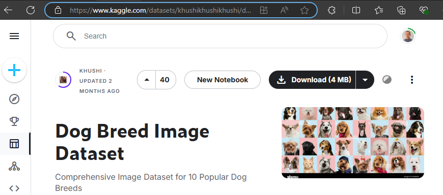
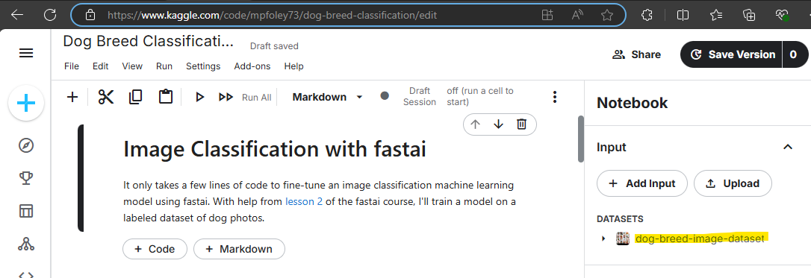
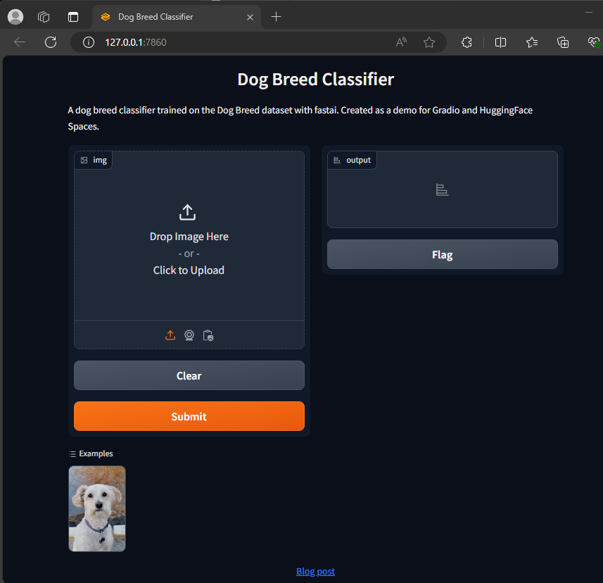

Today I fine tuned an image recognition deep learning model, created a web interface with Gradio, and deployed it on Hugging Face Spaces. This project was the subject of lesson 2 of fast.ai’s Deep Learning for Coders course.
Deep learning models need to train on a GPU (Graphics Processing Unit) because CPUs are too slow. I followed fast.ai’s recommendation to use Kaggle (Google Colab, AWS, and Microsoft Azure) are popular alternatives. Kaggle was particularly convenient because I was able to find a curated dataset there. After logging into Kaggle, I searched for “dog breed image” and came across this one posted by Khushi. I clicked “New Notebook” to create a project with the data already loaded into the environment.

It’s in the Input > Datasets section of my notebook. The full path is /kaggle/input/dog-breed-image-dataset.

My notebook follows chapter 2 of the fast.ai book. My notebook is self-documented, so I won’t step through each cell. But the upshot is that fast.ai provides a super-convenient framework for fitting a model. There is not much code in my notebook. Here are the highlights though:
Using fast.ai’s DataBlock() method, I created a DataLoader object that defines how manage the data: how it is structured, how to create the train/test split, any required transformations, etc. I used the object to load the dog breed data set, then passed it into vision_learner() to create a learner object and fine tune a ResNet-18 model on the data with fine_tune(). The model can then predict on new images using the predict() method. Now that the model was fine-tuned, I exported it to a pickle file with the export() method. I downloaded the pickle file from Kaggle to my laptop.
from fastai.vision.all import *
parent_dir = '/kaggle/input/dog-breed-image-dataset/dataset'
dogs = DataBlock(
blocks=(ImageBlock, CategoryBlock),
get_items=get_image_files,
splitter=RandomSplitter(valid_pct=0.2, seed=42),
get_y=parent_label,
item_tfms=[RandomResizedCrop(224, min_scale=0.5)],
batch_tfms=aug_transforms()
)
dls = dogs.dataloaders(parent_dir)
learn = vision_learner(dls, resnet18, metrics=error_rate)
learn.fine_tune(4)
learn.predict('/kaggle/input/dog-breed-image-dataset/dataset/Beagle/Beagle_1.jpg')
learn.export('dog_breed_classifier.pkl')Gradio is a Python library that allows you to quickly create user-friendly web interfaces for machine learning models. You can create an interface in just a few lines of code. Tanishq Abraham posted an article walking through the steps. Here is my experience.
I created a folder on my laptop and copied in the pickle file I had downloaded. I also grabbed a photo of Chester to use as an example.
I opened VS Code and created a new file named app.py. The full file is on Hugging Face, but here is the stripped down code:
import gradio as gr
from fastai.vision.all import *
import skimage
import pathlib
# Uncomment this for local (Windows) development.
# Reference: https://stackoverflow.com/questions/57286486/i-cant-load-my-model-because-i-cant-put-a-posixpath
#
# posix_backup = pathlib.PosixPath
# try:
# pathlib.PosixPath = pathlib.WindowsPath
# learn = load_learner('dog_breed_classifier.pkl')
# finally:
# pathlib.PosixPath = posix_backup
#
# Uncomment this for Hugging Face
learn = load_learner('dog_breed_classifier.pkl')
labels = learn.dls.vocab
def predict(img):
img = PILImage.create(img)
pred,pred_idx,probs = learn.predict(img)
return {labels[i]: float(probs[i]) for i in range(len(labels))}
title = "Dog Breed Classifier"
description = "A dog breed classifier trained on the Dog Breed dataset with fastai. Created as a demo for Gradio and HuggingFace Spaces."
article="<p style='text-align: center'><a href='https://mpfoley73.netlify.app/post/2024-07-21-deploying-a-deep-learning-model/' target='_blank'>Blog post</a></p>"
examples = ['chester_14.jpg']
gr.Interface(
fn=predict,
inputs=gr.Image(),
outputs=gr.Label(),
title=title,
description=description,
article=article,
examples=examples
).launch()If you compare my code to Tanishq’s blog, you will notice some small differences related to changes in the gradio library. Also, notice the comment block that reconciles the path differences between Hugging Face and my laptop. When you run the script, you get a notification in the terminal like this:
PS C:\Users\mpfol\OneDrive\Documents\GitHub\fastai_dog_breed_classifier> & C:/Users/mpfol/AppData/Local/Microsoft/WindowsApps/python3.11.exe c:/Users/mpfol/OneDrive/Documents/GitHub/fastai_dog_breed_classifier/app.py
Running on local URL: http://127.0.0.1:7860
To create a public link, set `share=True` in `launch()`.VS Code has spawned a local web site to run the app. Open the link!

The last step is to publish the app to Hugging Face Spaces so that it is publicly viewable. Continuing with Tanishq’s tutorial, I created an account at Hugging Face, then created a new Space. This is essentially a git repository on Hugging Face. I called my space fastai_dog_breed_classifier.
In VS Code, I opened the Terminal and changed directory into by GitHub repos area. Then I cloned the repo.
PS C:\Users\mpfol\OneDrive\Documents\GitHub> git clone https://huggingface.co/spaces/mpfoley73/fastai_dog_breed_classifier The Hugging Face Getting Started with Repositories article explains that you need git-lfs for large files like our pickle file.
PS C:\Users\mpfol\OneDrive\Documents\GitHub> git lfs installI copied my app.py, the pickle file, and Chester’s photo into my local GitHub directory. Then I committed the whole thing and pushed it up to Hugging Face.
PS C:\Users\mpfol\OneDrive\Documents\GitHub\fastai_dog_breed_classifier> git commit -am "initial commit"
PS C:\Users\mpfol\OneDrive\Documents\GitHub\fastai_dog_breed_classifier> git pushThe Hugging Face repo is here. After pushing the commit, Hugging Face immediately began deploying my app here.
And that was all I needed to do!
A final note: this actually took me over 10 hours spread over a few weeks. Almost nothing worked right without a lot of time and hair pulling. My notes make it seem simple, but it’s only simple after you’re done. Thank you, fastai, and Tanishq, and the other online resources!